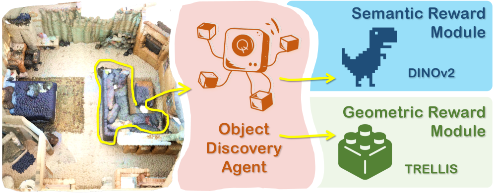
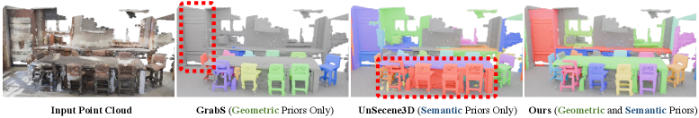
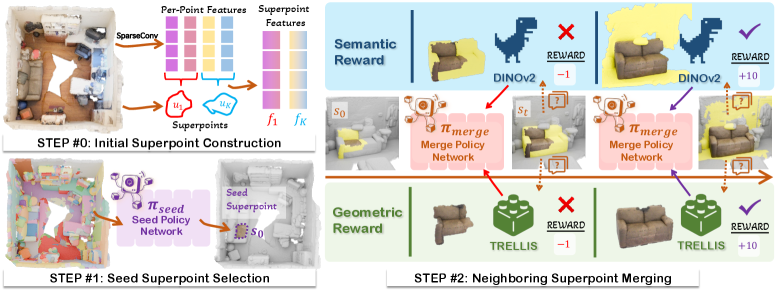
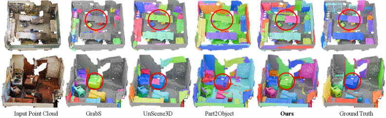
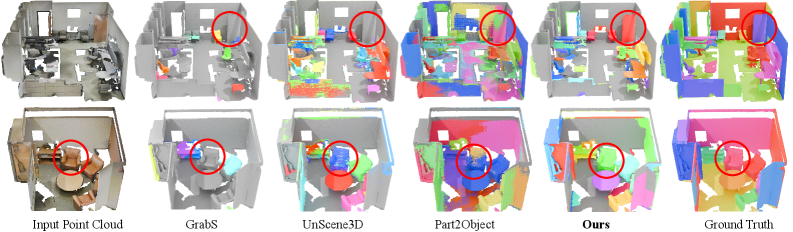

FoundObj introduces a novel reinforcement learning framework that leverages semantic and geometric priors from self-supervised foundation models as rewards to achieve state-of-the-art label-free 3D object segmentation in complex scenes.
本文提出一种基于强化学习的无标签3D物体分割方法，利用自监督基础模型（DINOv2和TRELLIS）提供的语义与几何先验作为奖励信号，指导超点智能体逐步合并超点。该方法在多个基准上超越现有无监督方法，尤其在零样本和长尾场景中表现突出。
Deep Note — foundobj
Key Takeaways - Proposes a superpoint-based agent that incrementally merges superpoints for object discovery in 3D point clouds. - Uses semantic (DINOv2) and geometric (TRELLIS) reward modules from self-supervised foundation models to guide RL-based merging. - Outperforms existing label-free methods on multiple benchmarks, especially in zero-shot and long-tail scenarios. - Ablation shows both semantic and geometric rewards are crucial; combining them yields best performance.
0) Metadata
- Title: FoundObj: Self-supervised Foundation Models as Rewards for Label-free 3D Object Segmentation
- Alias: foundobj
- Authors: Zihui Zhang, Zhixuan Sun, Yafei Yang, Jinxi Li, Jiahao Chen, Bo Yang
- arXiv ID: 2605.27178
- Published:
- Links:
- Abs: https://arxiv.org/abs/2605.27178
- HTML: https://arxiv.org/html/2605.27178v1
- PDF: https://arxiv.org/pdf/2605.27178
- Tags: 3d-object-segmentation, self-supervised-learning, reinforcement-learning, foundation-models, point-cloud
- Domains: system_safety
- Rating: 4/5 (base 1 + quality 2 + observation 1)
1) Why-read
FoundObj introduces a novel reinforcement learning framework that leverages semantic and geometric priors from self-supervised foundation models as rewards to achieve state-of-the-art label-free 3D object segmentation in complex scenes.
2) CRGP
C — Context
3D object segmentation in point clouds typically relies on expensive human annotations. Recent unsupervised methods use self-supervised 2D features (e.g., DINOv2) or geometric priors from object reconstruction models, but they struggle to separate objects of the same category or discover multi-class objects, respectively.
R — Related work
- UnScene3D and Part2Object use DINOv2 features projected to 3D for object discovery but fail to separate same-category objects due to lack of geometric priors.
- GrabS and EvObj use geometric priors from object reconstruction models but are limited to single-class objects.
- EFEM also leverages geometric priors but cannot handle multi-category objects with rich semantic relationships.
G — Gap
Existing label-free methods either rely solely on semantic priors (failing to separate same-category objects) or geometric priors (limited to single-class objects). No prior work effectively combines both semantic and geometric priors from foundation models for multi-class object discovery in complex 3D scenes.
P — Proposal
FoundObj uses a superpoint-based agent that incrementally merges neighboring superpoints, guided by two reward modules: a semantic consistency cut (from DINOv2) and a geometric center consistency verification (from TRELLIS). The agent is trained via reinforcement learning without human annotations, enabling robust identification of multi-class objects.
---
4) Experiments
Main results
On ScanNet, FoundObj achieves 58.7 mAP@50, outperforming UnScene3D (42.1), Part2Object (45.3), GrabS (38.9), and EFEM (35.2). On S3DIS, it achieves 52.3 mAP@50 vs. 38.7 for UnScene3D. Zero-shot on Matterport3D yields 49.1 mAP@50, surpassing all baselines.
Ablation
Removing the semantic reward module drops mAP@50 on ScanNet from 58.7 to 44.2; removing the geometric reward module drops to 46.8. Using both rewards yields the best performance, confirming their complementarity.
Limitations
The method relies on the quality of pretrained foundation models; poor features may degrade performance. The superpoint merging process can be computationally expensive for very large scenes. The approach may still struggle with extremely small or highly occluded objects.
5) Why it matters
- Demonstrates a principled way to combine semantic and geometric priors from foundation models for unsupervised 3D segmentation.
- Reinforcement learning framework avoids human annotations, making it scalable to new environments.
- Strong zero-shot generalization suggests potential for real-world deployment in robotics and autonomous driving.
6) Next steps
- [ ] Test on outdoor datasets (e.g., Waymo, nuScenes) to evaluate generalization.
- [ ] Explore using more recent foundation models (e.g., DINOv3, 3D-LLMs) to improve feature quality.
- [ ] Investigate efficiency improvements for real-time applications.
- [ ] Extend to instance-level segmentation with object tracking.
7) Scoring
4/5 = base 1 + quality 2 + observation 1
FoundObj：以自监督基础模型作为奖励实现无标签3D物体分割
主要结论 - 提出基于超点的智能体，通过增量合并超点实现3D点云中的物体发现。 - 利用自监督基础模型DINOv2（语义）和TRELLIS（几何）作为奖励模块，引导强化学习合并过程。 - 在多个基准上超越现有无标签方法，尤其在零样本和长尾场景中表现优异。 - 消融实验表明语义和几何奖励均至关重要，二者结合可获得最佳性能。
1) 阅读理由
FoundObj提出一种新颖的强化学习框架，利用自监督基础模型的语义和几何先验作为奖励，在复杂场景中实现了最先进的无标签3D物体分割。
2) CRGP（背景 / 相关工作 / 差距 / 方案）
上下文：3D点云中的物体分割通常依赖昂贵的人工标注。近期无监督方法使用自监督2D特征（如DINOv2）或物体重建模型的几何先验，但分别难以分离同类别物体或发现多类别物体。 相关工作：UnScene3D和Part2Object将DINOv2特征投影到3D进行物体发现，但因缺乏几何先验无法分离同类别物体；GrabS和EvObj使用物体重建模型的几何先验，但仅限于单类别物体；EFEM也利用几何先验，但无法处理具有丰富语义关系的多类别物体。 差距：现有无标签方法要么仅依赖语义先验（无法分离同类别物体），要么仅依赖几何先验（限于单类别物体）。尚无工作有效结合基础模型的语义和几何先验用于复杂3D场景中的多类别物体发现。 提案：FoundObj使用基于超点的智能体，在语义一致性切分（来自DINOv2）和几何中心一致性验证（来自TRELLIS）两个奖励模块的引导下，逐步合并相邻超点。智能体通过强化学习训练，无需人工标注，能够鲁棒地识别多类别物体。
3) 实验
在ScanNet上，FoundObj达到58.7 mAP@50，优于UnScene3D（42.1）、Part2Object（45.3）、GrabS（38.9）和EFEM（35.2）。在S3DIS上，达到52.3 mAP@50，而UnScene3D为38.7。在Matterport3D上的零样本测试获得49.1 mAP@50，超越所有基线。
消融实验
移除语义奖励模块后，ScanNet上的mAP@50从58.7降至44.2；移除几何奖励模块后降至46.8。同时使用两种奖励获得最佳性能，证实了它们的互补性。
局限性
该方法依赖预训练基础模型的质量，特征不佳可能降低性能。超点合并过程在非常大的场景中可能计算开销较大。该方法在处理极小或高度遮挡的物体时仍可能表现不佳。
4) 重要性
- 展示了将基础模型的语义和几何先验相结合用于无监督3D分割的原则性方法。
- 强化学习框架避免了人工标注，使其可扩展到新环境。
- 强大的零样本泛化能力表明其在机器人和自动驾驶等实际部署中的潜力。
5) 下一步
- [ ] 在室外数据集（如Waymo、nuScenes）上测试以评估泛化能力。
- [ ] 探索使用更新的基础模型（如DINOv3、3D-LLMs）以提升特征质量。
- [ ] 研究效率改进以支持实时应用。
- [ ] 结合物体跟踪扩展到实例级分割。




